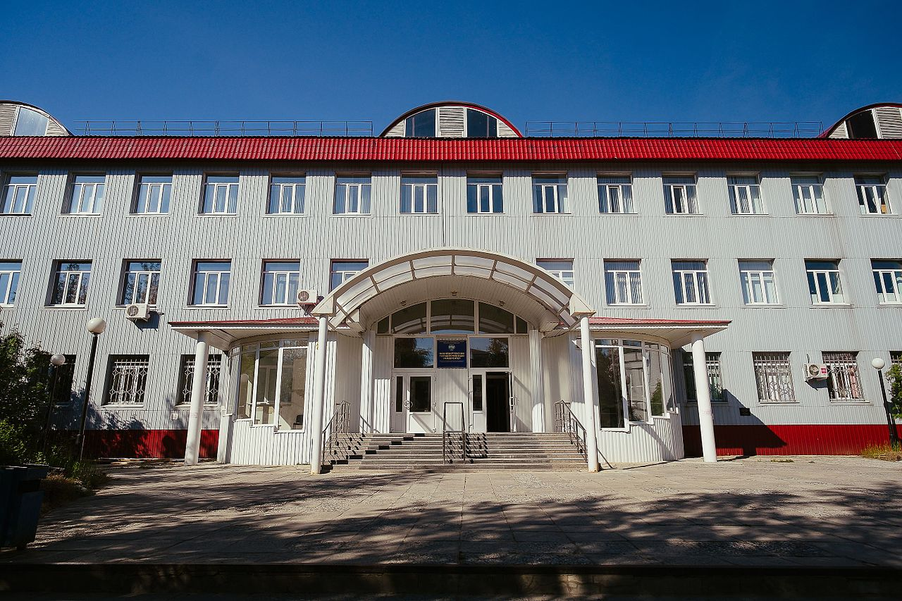

Нижневартовский государственный университет (НВГУ, полное наименование: Федеральное государственное бюджетное образовательное учреждение высшего образования «Нижневартовский государственный университет») — высшее учебное заведение, расположенное в Нижневартовске.
- Инженерно-технический факультет
- Факультет дополнительного образования
- Факультет педагогики и психологии
- Факультет экономики и управления
- Факультет искусств и дизайна
- Факультет физической культуры и спорта
- Факультет информационных технологий и математики
- Факультет экологии и инжиниринга
- Гуманитарный факультет
История
12 июля 1988 года в Нижневартовске был открыт филиал Тобольского государственного педагогического института им. Д. И. Менделеева. Филиал включал в себя три факультета: физико-математический; филологический и педагогический. В филиале было 22 преподавателя, обучалось 150 человек.. В 1992 году Нижневартовский государственный педагогический институт одним из первых в России перешел на двухступенчатую подготовку педагогических кадров совместно с Нижневартовским педагогическим училищем (колледжем) в структуре учебно-научного педагогического комплекса. В 1992 году Нижневартовский филиал ТГПИ им. Д. И. Менделеева преобразован в Нижневартовский педагогический институт. В 1992 году в уже вузе обучалось 1173 человека. В 2005 году институт был переименован в Нижневартовский государственный гуманитарный университет, а в 2013 году переименован в Нижневартовский государственный университет. Уже не первый год по результатам ежегодного рейтинга Федерального агентства по образованию университет находится в десятке лучших педагогических, лингвистических и гуманитарных вузов России. По итогам рейтинга педагогических, гуманитарных и лингвистических вузов за 2009 год, составленного Министерством образования и науки, Нижневартовский государственный гуманитарный университет занял 5 место среди 74 вузов России. На 2015 год в университете 9 факультетов, 22 кафедры, 14 научно-исследовательских лабораторий, 3 студенческих конструкторских бюро, аспирантура. Здесь обучаются более 5000 студентов.